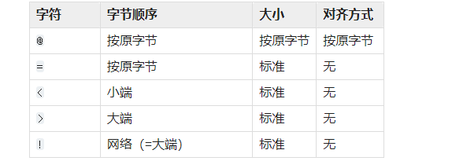
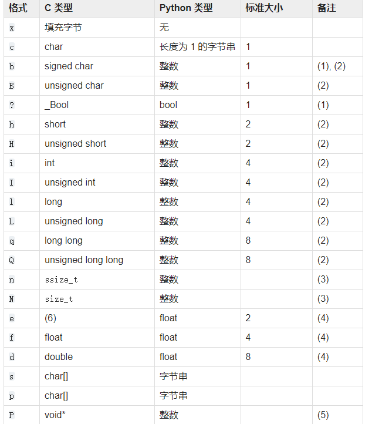

Python 常用数据类型转换 在CTF中，经常需要各种数据类型之间的转换
struct模块
官方文档: https://docs.python.org/zh-cn/3.10/library/struct.html
C语言数据结构与python bytes之间的转换


1 2 3 4 5 6 7 8 9 10 11 12 13 14 15 16 17 18 19 In [1 ]: import struct In [2 ]: struct.pack("<LLLL" , 1 ,2 ,3 ,4 ) Out[2 ]: b'\x01\x00\x00\x00\x02\x00\x00\x00\x03\x00\x00\x00\x04\x00\x00\x00' In [3 ]: struct.pack("<LLLL" ,'a' ,2 ,3 ,4 ) --------------------------------------------------------------------------- error Traceback (most recent call last) <ipython-input -3 -e0808e208379> in <module> ----> 1 struct.pack("<LLLL" ,'a' ,2 ,3 ,4 ) error: required argument is not an integer In [4 ]: c = struct.pack('<I' , ord ('a' )) In [5 ]: b = struct.unpack('<I' , c) In [6 ]: b[0 ] Out[6 ]: 97
binascii模块 二进制和ASCII之间的转换
官方文档: https://docs.python.org/zh-cn/3.7/library/binascii.html
1 2 3 4 5 6 7 8 9 10 11 12 13 14 15 16 In [1 ]: import binascii In [2 ]: binascii.hexlify(b'12345' ) Out[2 ]: b'3132333435' In [3 ]: binascii.hexlify(b'12345' , '-' ) Out[3 ]: b'31-32-33-34-35' In [4 ]: binascii.unhexlify(b'3132333435' ) Out[4 ]: b'12345' In [5 ]: binascii.crc32(b'123' ) Out[5 ]: 2286445522 In [6 ]: hex (binascii.crc32(b'123' )) Out[6 ]: '0x884863d2'
进制之间的转换 1 2 3 4 5 6 7 8 9 10 11 12 13 14 15 16 17 In [7 ]: int (0x12 ) Out[7 ]: 18 In [8 ]: int ('23' ) Out[8 ]: 23 In [9 ]: int ('1111' , 2 ) Out[9 ]: 15 In [10 ]: int ('11' , 16 ) Out[10 ]: 17 In [11 ]: bin (123 ) Out[11 ]: '0b1111011' In [12 ]: int ('1111011' , 2 ) Out[12 ]: 123
bytes和数字之间的转换 1 2 3 4 5 6 7 8 9 10 11 12 13 14 15 16 17 18 19 20 21 22 23 In [17 ]: from Crypto.Util.number import long_to_bytes, bytes_to_long In [18 ]: bytes_to_long(b'flag' ) Out[18 ]: 1718378855 In [19 ]: hex (1718378855 ) Out[19 ]: '0x666c6167' In [20 ]: from binascii import * In [21 ]: unhexlify(1718378855 ) --------------------------------------------------------------------------- TypeError Traceback (most recent call last) <ipython-input -21 -43c0727e7de8> in <module> ----> 1 unhexlify(1718378855 ) TypeError: argument should be bytes , buffer or ASCII string, not 'int' In [22 ]: unhexlify('666c6167' ) Out[22 ]: b'flag' In [23 ]: long_to_bytes(1718378855 ) Out[23 ]: b'flag'
列表和bytes,str类型转换 1 2 3 4 5 6 7 8 9 10 11 12 13 14 15 16 17 In [28 ]: a = b'flag' In [29 ]: b = list (a) In [30 ]: b Out[30 ]: [102 , 108 , 97 , 103 ] In [31 ]: bytes (b) Out[31 ]: b'flag' In [36 ]: a = list ("flag" ) In [37 ]: a Out[37 ]: ['f' , 'l' , 'a' , 'g' ] In [38 ]: "" .join(a) Out[38 ]: 'flag'
 微信
微信 支付宝
支付宝